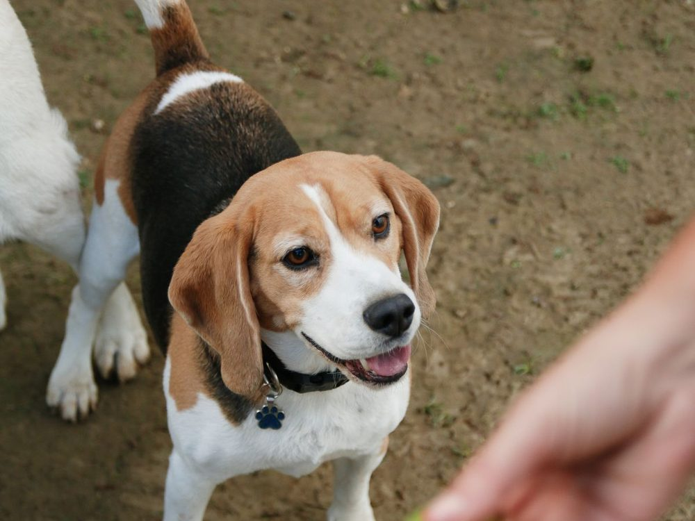

Forsberg-Iron Spring Dog Park Dog park
- Fenced Unknown — City lists an off-leash dog park but not its fencing
- Water Unknown
- Small-dog area Unknown
- Hours Not stated on the City page
City calls it “a popular dog park” with expanded parking, permanent restrooms, picnic shelters, and a trailhead to William F. Hayden Park (Green Mountain) — dogs leashed on those trails.